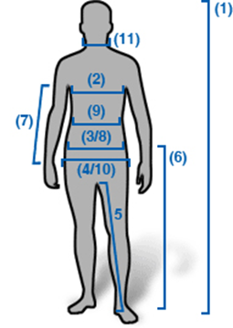

1.Okovratnik
• Za merenje dužine ovratnika početi od dela vrata gde okovratnik kreće i laganim krugom zatvoriti petlju.
2.Grudi
• Za merenje prsa najveći deo prsa treba biti pokriven mernom trakom koja prolazi ispod pazuha pa preko lopatica zadnjeg dela tela.
3.Struk
• Za merenje struka zauzeti pravilan uspravan položaj. Merenje odmah ispod pupka daje najbolji rezultat.

4.Noga
• Za merenje dužine pantalona početi od prepone do željene dužine nogavice.
5.Visina
• Kod merenja visine zauzeti prav položaj i meriti od vrha glave do pete bez krivljenja merne trake.
6.Rukavi
• Dužina rukava se meri počevši od vrha ramena do prvog članka palca na ruci.
7.Ramena
• Širina ramena se meri dok su ruke paralelno uz telo.
U prirodno opuštenom položaju pružiti traku od jednog do drugog kraja ramenog dela.
8.Dužina za mantil
• Za merenje dužine mantila početi od položaja okovratnika do položaja gde se koleno savija.
Za lakše lociranje mernih mesta pogledajte siluetu.
| Muskrci | Velicina | XXS | XS | S | M | L | XL | XXL |
|---|---|---|---|---|---|---|---|
| Obim grudi(cm) | 76-82 | 83-89 | 91-96 | 99-107 | 109-114 | 117-121 | 127-132 |
| Struk(cm) | 63-66 | 66-71 | 71-78 | 79-84 | 86-92 | 94-102 | 110-117 |